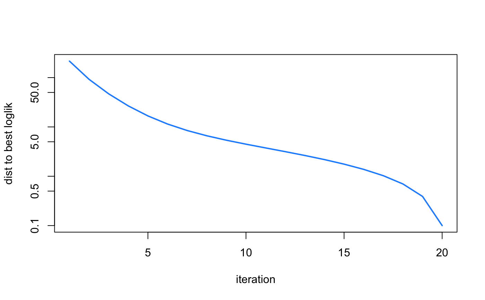
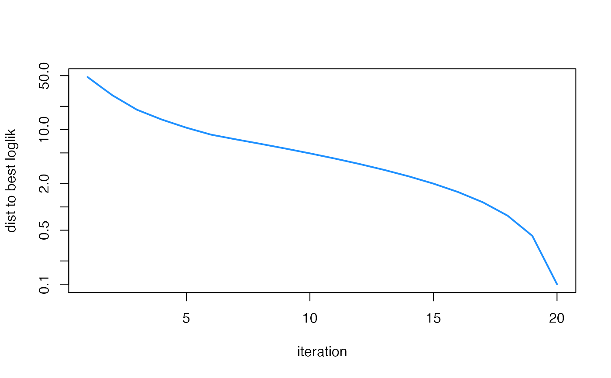

This function implements "Ultimate Deconvolution", an empirical Bayes method for fitting a multivariate normal means model. This method is closely related to approaches for multivariate density deconvolution (Sarkar et al, 2018), so it can also be viewed as a method for multivariate density deconvolution.
ud_fit(fit, X, control = list(), verbose = TRUE) ud_fit_control_default()
| fit | A previous Ultimate Deconvolution model fit. Typically,
this will be an output of |
|---|---|
| X | The n x m data matrix, in which each row of the matrix is an m-dimensional data point. The number of rows and columns should be 2 or more. |
| control | A list of parameters controlling the behaviour of the model fitting and initialization. See ‘Details’. |
| verbose | When |
An Ultimate Deconvolution model fit. It is a list object with the following elements:
A vector containing the estimated mixture weights in the mixture-of-normals prior.
A list containing the estimated prior covariance matrices.
The estimated residual covariance matrix, or a list of fixed covariance matrices.
The log-likelihood at the current settings of the model parameters.
A data frame containing detailed information about
the algorithm's progress. The columns of the data frame are:
"iter", the iteration number; "loglik", the log-likelihood at the
current estimates of the model parameters; "delta.w", the largest
change in the mixture weights; "delta.u", the largest change in the
prior covariance matrices; "delta.v", the largest change in the
residual covariance matrix; and "timing", the elapsed time in
seconds (recorded using proc.time).
In the Ultimate Deconvolution (UD) model, the m-dimensional observation \(x\) is drawn from a mixture of multivariate normals, \(x ~ w_1 N(0, T_1) + ... + w_k N(0, T_k)\), where \(k \ge 2\) is the number of mixture components, the \(w_j\)'s are mixture weights, and each \(T_j = V_j + U_j\) is a covariance matrix. This is the marginal density derived from a model in which \(x\) is multivariate normal with mean \(y\) and covariance \(V\), and the underlying, or "latent", signal \(y\) is in turn modeled by a mixture prior in which each mixture component \(j\) is multivariate normal with zero mean and covariance matrix \(U_j\). This model is a useful special case of the "Extreme Deconvolution" (ED) model (Bovy et al, 2011), and is closely related to the factor analysis model (Rubin and Thayer, 1982).
Two variants of the UD model are implemented: one in which the residual covariance V is the same for all data points, and another in which V is different for each data point. In the first case, V may be estimated.
The UD model is fit by an expectation-maximization (EM)
algorithm. The control argument can be used to adjust the EM
settings. It is a list in which any of the following named components
will override the default algorithm settings (as they are defined
by ud_fit_control_default):
weights.updateWhen weights.update = "em", the
mixture weights are updated via EM; when weights.update =
"none", the mixture weights are not updated.
resid.updateWhen resid.update = "em", the
residual covariance matrix is updated via EM; when
resid.update = "none", the residual covariance matrix is not
updated. When resid.update = NA, the update is determined by
V; if V is a matrix (that is, the case when the residual covariance
is the same for all data points), EM is used to update V; otherwise,
no updating is performed.
scaled.updateThis setting specifies the updates for
the scaled prior covariance matrices. Possible settings are
"fa", "none" or NA.
rank1.updateThis setting specifies the updates for
the rank-1 prior covariance matrices. Possible settings are
"ed", "ted", "none" or NA.
unconstrained.updateThis setting determines the
updates used to estimate the unconstrained prior covariance
matrices. Two variants of EM are implemented: update.U =
"ed", the EM updates described by Bovy et al (2011); and
update.U = "ted", "truncated eigenvalue decomposition", in
which the M-step update for each covariance matrix U[[j]] is
solved by truncating the eigenvalues in a spectral decomposition of
the unconstrained maximimum likelihood estimate (MLE) of
U[j]]. Other possible settings include "none" or
codeNA.
versionR and C++ implementations of the model
fitting algorithm are provided; these are selected with
version = "R" and version = "Rcpp".
maxiterThe upper limit on the number of updates to perform.
tolConvergence tolerance for the optimization; the
updates are halted when the largest change in the model parameters
between two successive updates is less than tol.
minvalMinimum eigenvalue allowed in the residual
covariance(s) V and the prior covariance matrices
U. Should be a small, positive number.
Using this function requires some care; currently only minimal argument checking is performed. See the documentation and examples for guidance.
J. Bovy, D. W. Hogg and S. T. Roweis (2011). Extreme Deconvolution: inferring complete distribution functions from noisy, heterogeneous and incomplete observations. Annals of Applied Statistics, 5, 1657–1677. doi:10.1214/10-AOAS439
D. B. Rubin and D. T. Thayer (1982). EM algorithms for ML factor analysis. Psychometrika 47, 69-76. doi:10.1007/BF02293851
A. Sarkar, D. Pati, A. Chakraborty, B. K. Mallick and R. J. Carroll (2018). Bayesian semiparametric multivariate density deconvolution. Journal of the American Statistical Association 113, 401–416. doi:10.1080/01621459.2016.1260467
J. Won, J. Lim, S. Kim and B. Rajaratnam (2013). Condition-number-regularized covariance estimation. Journal of the Royal Statistical Society, Series B 75, 427–450. doi:10.1111/j.1467-9868.2012.01049.x
# Simulate data from a UD model. set.seed(1) n <- 4000 V <- rbind(c(0.8,0.2), c(0.2,1.5)) U <- list(none = rbind(c(0,0), c(0,0)), shared = rbind(c(1.0,0.9), c(0.9,1.0)), only1 = rbind(c(1,0), c(0,0)), only2 = rbind(c(0,0), c(0,1))) w <- c(0.8,0.1,0.075,0.025) rownames(V) <- c("d1","d2") colnames(V) <- c("d1","d2") X <- simulate_ud_data(n,w,U,V) # This is the simplest invocation of ud_init. fit1 <- ud_init(X) fit1 <- ud_fit(fit1)#> Performing Ultimate Deconvolution on 4000 x 2 matrix (udr 0.3-85, "R"): #> data points are i.i.d. (same V) #> prior covariances: 2 scaled, 4 rank-1, 4 unconstrained #> prior covariance updates: scaled (fa), rank-1 (ted), unconstrained (ted) #> mixture weights update: em #> residual covariance update: em #> max 20 updates, conv tol 1.0e-06 #> iter log-likelihood |w - w'| |U - U'| |V - V'| #> 1 -1.2218124901048504e+04 4.09e-02 4.70e+00 2.63e-01 #> 2 -1.2207202968003554e+04 2.24e-03 1.61e-01 4.94e-02 #> 3 -1.2204417672445234e+04 7.66e-04 2.46e-01 1.24e-02 #> 4 -1.2202886598844168e+04 2.11e-04 8.83e-02 7.27e-03 #> 5 -1.2201796622401382e+04 1.74e-04 8.06e-02 5.84e-03 #> 6 -1.2200987449361346e+04 1.72e-04 7.07e-02 4.87e-03 #> 7 -1.2200370063898208e+04 1.56e-04 5.97e-02 4.65e-03 #> 8 -1.2199885683989782e+04 1.54e-04 4.76e-02 4.19e-03 #> 9 -1.2199491766510911e+04 1.50e-04 4.50e-02 3.78e-03 #> 10 -1.2199159264518366e+04 1.45e-04 4.61e-02 3.36e-03 #> 11 -1.2198869698996561e+04 1.43e-04 4.65e-02 2.97e-03 #> 12 -1.2198612551558699e+04 1.55e-04 4.59e-02 2.60e-03 #> 13 -1.2198382689153303e+04 1.61e-04 4.43e-02 2.25e-03 #> 14 -1.2198177932000039e+04 1.63e-04 4.18e-02 1.92e-03 #> 15 -1.2197997324019223e+04 1.60e-04 3.83e-02 1.60e-03 #> 16 -1.2197839686357604e+04 1.55e-04 3.43e-02 1.30e-03 #> 17 -1.2197703188908119e+04 1.49e-04 3.00e-02 1.03e-03 #> 18 -1.2197585426841866e+04 1.42e-04 2.57e-02 7.91e-04 #> 19 -1.2197483771764697e+04 1.35e-04 2.16e-02 5.82e-04 #> 20 -1.2197395696869638e+04 1.30e-04 2.00e-02 5.33e-04logLik(fit1)#> 'log Lik.' -12197.4 (df=NA)summary(fit1)#> Model overview: #> Number of data points: 4000 #> Dimension of data points: 2 #> Data points are i.i.d. (same V) #> Number of scaled prior covariances: 2 #> Number of rank-1 prior covariances: 4 #> Number of unconstrained prior covariances: 4 #> Evaluation of fit (20 updates performed): #> Log-likelihood: -1.219739569687e+04plot(fit1$progress$iter, max(fit1$progress$loglik) - fit1$progress$loglik + 0.1, type = "l",col = "dodgerblue",lwd = 2,log = "y",xlab = "iteration", ylab = "dist to best loglik")# This is a more complex invocation of ud_init that overrides some # of the defaults. fit2 <- ud_init(X,U_scaled = U,n_rank1 = 1,n_unconstrained = 1,V = V) fit2 <- ud_fit(fit2)#> Performing Ultimate Deconvolution on 4000 x 2 matrix (udr 0.3-85, "R"): #> data points are i.i.d. (same V) #> prior covariances: 4 scaled, 1 rank-1, 1 unconstrained #> prior covariance updates: scaled (fa), rank-1 (ted), unconstrained (ted) #> mixture weights update: em #> residual covariance update: em #> max 20 updates, conv tol 1.0e-06 #> iter log-likelihood |w - w'| |U - U'| |V - V'| #> 1 -1.2211234169952773e+04 7.30e-02 6.88e+00 2.57e-01 #> 2 -1.2203118709196298e+04 3.35e-03 2.02e-01 8.16e-02 #> 3 -1.2201982742279066e+04 1.03e-03 1.07e-01 8.71e-03 #> 4 -1.2201482431507115e+04 3.31e-04 3.16e-02 1.17e-02 #> 5 -1.2201141974419708e+04 2.34e-04 3.54e-02 5.07e-03 #> 6 -1.2200891544388001e+04 1.89e-04 2.79e-02 5.81e-03 #> 7 -1.2200699430870367e+04 1.73e-04 2.47e-02 4.86e-03 #> 8 -1.2200547790124814e+04 1.65e-04 2.15e-02 4.53e-03 #> 9 -1.2200425168914082e+04 1.62e-04 1.90e-02 4.15e-03 #> 10 -1.2200323997214227e+04 1.59e-04 1.69e-02 3.87e-03 #> 11 -1.2200239004257683e+04 1.58e-04 1.52e-02 3.62e-03 #> 12 -1.2200166538989928e+04 1.57e-04 1.37e-02 3.42e-03 #> 13 -1.2200103923338407e+04 1.55e-04 1.24e-02 3.24e-03 #> 14 -1.2200049181168368e+04 1.55e-04 1.13e-02 3.09e-03 #> 15 -1.2200000828293631e+04 1.54e-04 1.03e-02 2.96e-03 #> 16 -1.2199957731849045e+04 1.54e-04 9.49e-03 2.84e-03 #> 17 -1.2199919014627860e+04 1.53e-04 8.75e-03 2.73e-03 #> 18 -1.2199883988086289e+04 1.53e-04 8.09e-03 2.63e-03 #> 19 -1.2199852125100053e+04 1.53e-04 7.51e-03 2.54e-03 #> 20 -1.2199822962554748e+04 1.52e-04 6.98e-03 2.46e-03logLik(fit2)#> 'log Lik.' -12199.82 (df=NA)summary(fit2)#> Model overview: #> Number of data points: 4000 #> Dimension of data points: 2 #> Data points are i.i.d. (same V) #> Number of scaled prior covariances: 4 #> Number of rank-1 prior covariances: 1 #> Number of unconstrained prior covariances: 1 #> Evaluation of fit (20 updates performed): #> Log-likelihood: -1.219982296255e+04plot(fit2$progress$iter, max(fit2$progress$loglik) - fit2$progress$loglik + 0.1, type = "l",col = "dodgerblue",lwd = 2,log = "y",xlab = "iteration", ylab = "dist to best loglik")